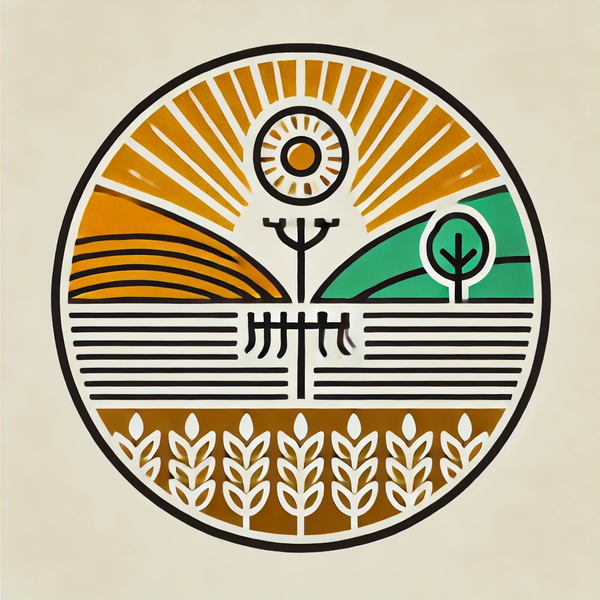
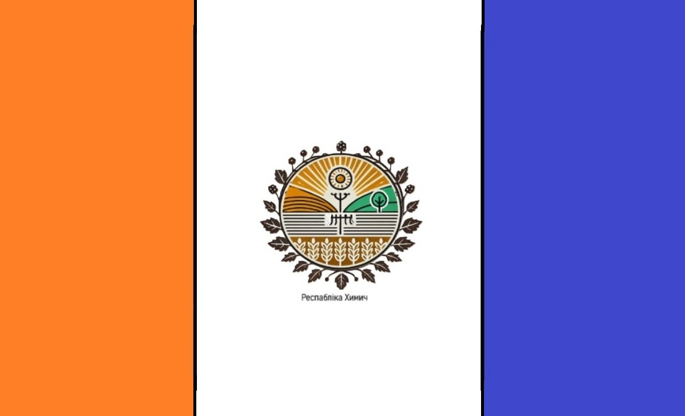

Герб Республіки Химич
Прапор Республіки Химич
'''Республіка Химич''' — віртуальна держава, створена для відображення культури, історії та традицій села Химич та його околиць. == Географія == Республіка Химич розташована на межі Лубенського, Миргородського, а до недавнього часу Хорольського району. Основною територією республіки є територія колишнього села Химич, яке з початку 2000-х років приєднали до складу села Новооріхівка Полтавської області. == Історія == Село Химич виникло після будівництва ферми, а до цього тут знаходився хутір, де жив пан Химич. На сьогоднішний день в селі проживає приблизно 50 мешканців, функціонували магазин та клуб. Раніше біля села був ставок, який згодом висох, і на його місці почали випасати худобу. У центрі колишнього ставка є криниця для корів. == Символіка == Символами Республіки Химич є прапор і герб. '''Прапор''' складається з трьох вертикальних смуг: оранжевої, білої та синьої. '''Герб''' містить традиційні елементи та обрамлення із гілочок шовковиці. == Населення == На території Республіки Химич налічується близько 50 жителів. На захід від Химича розташоване село Зубенки, де мешкає лише 5 осіб. == Культура та традиції == Мешканці Республіки Химич зберігають традиції, пов’язані з місцевою історією та побутом. Використовується Химичанська мова, яка є унікальним діалектом із впливами української, білоруської, та старослов'янської мов. == Економіка == Основними видами діяльності мешканців є сільське господарство та тваринництво. Важливу роль у місцевій економіці відіграє вирощування зернових культур та розведення худоби. - Інформація, зібрана мешканцями Республіки Химич [[Категорія:Віртуальні держави]] [[Категорія:Полтавська область]]